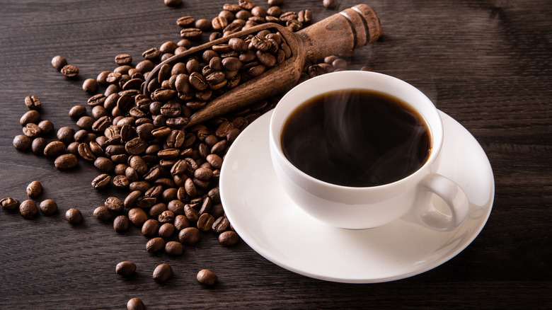
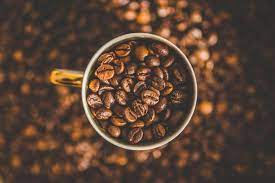
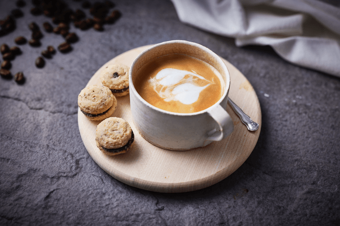
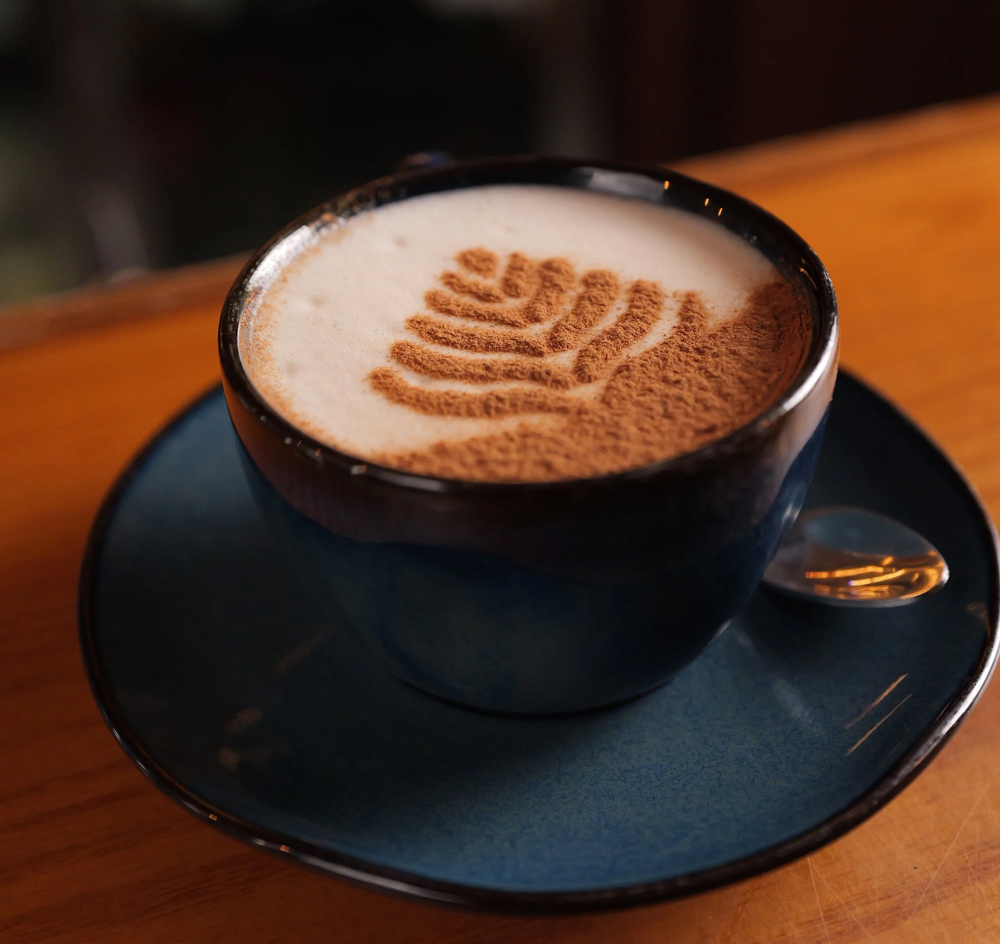

Our Coffee Blog
The Secret of Perfect Espresso
Espresso is the base of almost every coffee drink. To make it perfect, you need finely ground beans, hot water at the right temperature, and a skilled barista.
Tip: Use freshly ground beans and preheated cups for the best taste.








Top 3 Coffee Beans
- Arabica: smooth, floral, slightly acidic.
- Robusta: strong, bold, more caffeine.
- Liberica: rare, smoky, exotic flavor.
Why Coffee Makes You Happy
Coffee boosts dopamine and improves mood. More than a drink — it’s a ritual of comfort and joy.
Sharing a cup of coffee with friends also increases social connection, making you happier.
Our Barista’s Tips
Always clean your coffee machine, use filtered water, and never underestimate the importance of milk quality. Steamed milk can make or break your latte.